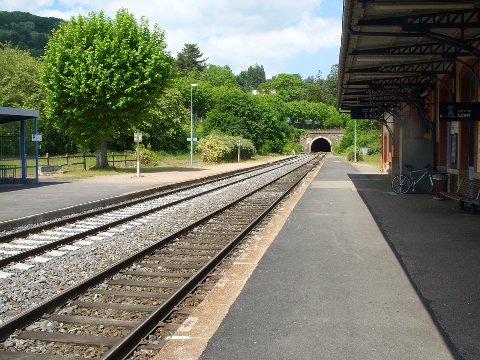
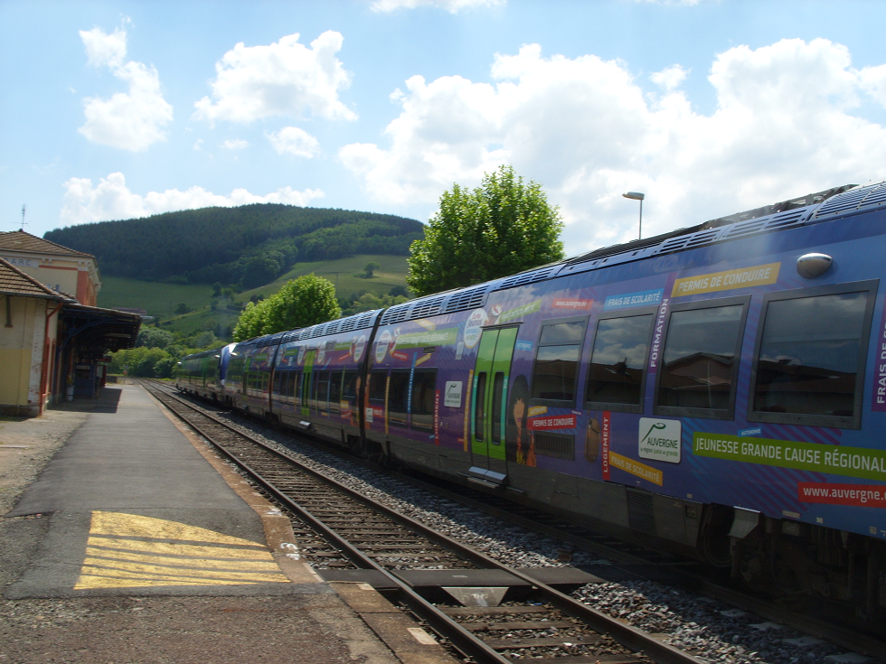
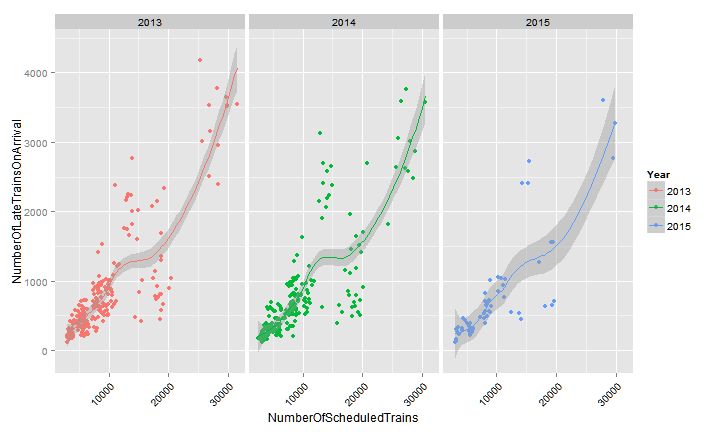

French TER (regional train) Monthly Regularity
Since January 2013
My shinyapp | TER data
Developing Data Products* Course Project
Pierre Vettori - brigasnuncamais
Sun May 24th, 2015
* a Johns Hopkins Bloomberg school of public health Mooc

Do you think it is the Wild Wild West?
No, it's Tarare, my home town.
Lyon is 40mins from here by the TER.
Now I can hear the train coming.

-- SNCF, the french railway operator
gave the access to some data about schedules, late or deleted trains.
-- I built an application to statistically manipulate this data:
540 records concerning aggregated count of trains in all Administrative French regions.
not big data but...
# Plot NumberOfScheduledTrains vs NumberOfLateTrainsOnArrival; facet and
# color by year
ggplot(dataset, aes_string("NumberOfScheduledTrains", "NumberOfLateTrainsOnArrival")) +
geom_point() + theme(axis.text.x = element_text(angle = 45, hjust = 1, colour = "black")) +
aes_string(color = "Year") + facet_grid(".~Year") + geom_smooth(group = "NumberOfScheduledTrains")
